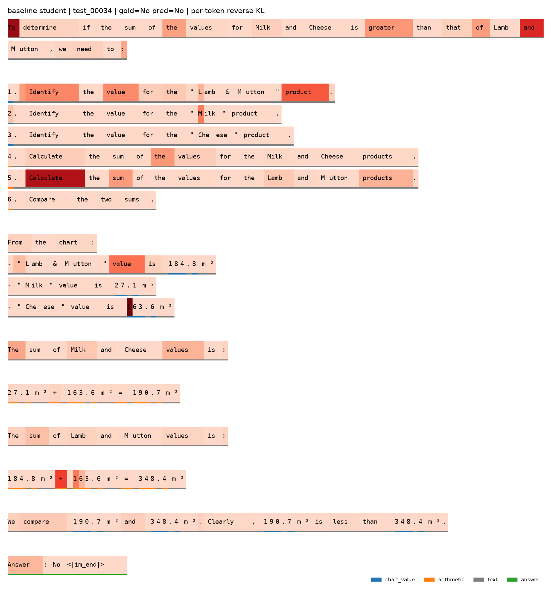
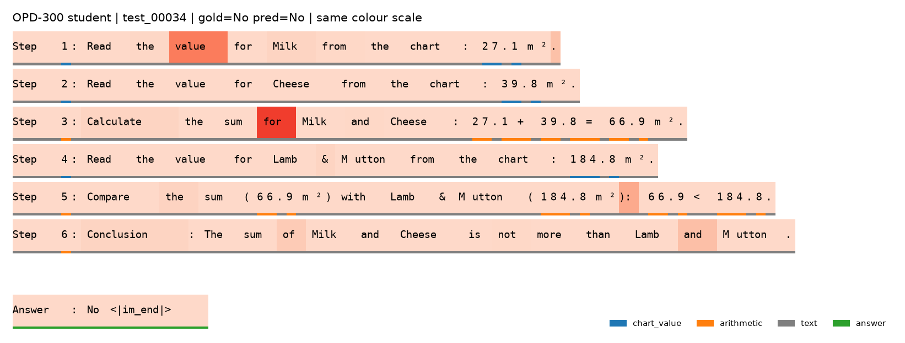

Supervised distillation is behavior cloning, and behavior cloning compounds its errors
Fine-tuning a student on teacher outputs only ever shows it the states the teacher visited. At inference the student drifts, enters states it never trained on, and its mistakes compound: regret grows quadratically in the sequence length, O(T²ε). Long chain-of-thought reasoning has a large T, so this is exactly where the problem bites.
DAgger's fix is to let the student act and then ask the expert what it should have done in the states the student actually reached, which brings regret down to O(Tε). A teacher language model can be queried this way for free: the student samples a solution, the teacher scores every generated token, and training minimizes the per-token KL between the two. That is on-policy distillation.
OPD only touches the distribution over text tokens. For a vision-language model the image is just part of the prefix, so the method should transfer. This project checks whether it does, whether the data-efficiency claim survives, and, since the prefix now contains a chart, where the teacher's feedback actually lands.
One student, one teacher, one GPU, one fixed test set
Student
Teacher
Data
Scoring: numeric answers within 5% relative error, text answers exact after normalization, and a missing Answer: line counts as wrong. Every number carries a percentile bootstrap interval; comparisons between two systems use a paired bootstrap over the same questions, which is far tighter than comparing two independent intervals.
Why human-written questions only. On a random ChartQA mix, three quarters machine-generated, the 2B student already scores 0.84 zero-shot against 0.90 for a 4B teacher: too little headroom to separate any two methods. Human questions open a 17.6-point gap between student and teacher.
OPD reaches full-data SFT accuracy with 10% of the questions
Accuracy vs. training questions
Hover a point for its interval. Log-scaled x axis. Numbers regenerated from the result files on the Hub.
| Training questions | SFT | OPD | OPD − SFT, paired 95% CI |
|---|---|---|---|
| 100 (3%) · 4 seeds | 0.793 [0.775, 0.810] | 0.811 [0.794, 0.829] | +0.018 [+0.004, +0.034] |
| 300 (10%) · 4 seeds | 0.799 [0.782, 0.817] | 0.826 [0.810, 0.843] | +0.027 [+0.013, +0.042] |
| 900 (30%) | 0.808 [0.774, 0.842] | 0.820 [0.786, 0.854] | +0.012 [−0.016, +0.040] |
| 3,000 (100%) | 0.834 [0.802, 0.866] | 0.824 [0.790, 0.858] | −0.010 [−0.036, +0.016] |
The 100- and 300-question points are each averaged over four seeds (seed = data order and rollout sampling; the test set is fixed), with intervals pooled over questions and deltas paired by seed. OPD leads by 1.8 and 2.7 points and both intervals exclude zero. OPD on 100 questions (0.811) matches SFT on 900 (0.808). The first single-seed run had shown +5.8 at 300 questions; that seed turned out to be the weakest of four SFT draws, so the multi-seed estimate is the one to quote. OPD's across-seed spread (sd 0.007 to 0.009) is about half of SFT's (0.015 to 0.022).
With enough data both methods saturate at the teacher
At 900 and 3,000 questions the paired differences are +1.2 and −1.0 points, both inside their intervals. The full-data SFT student is already within one point of the 8B teacher, so there is nothing left for OPD to add on this task with this teacher. Separating the methods at full data would need a stronger teacher or a harder test set, not more steps.
Two caveats stated plainly. The 900- and 3,000-question points are single-seed. The 3,000-question OPD run covers each question less than once (2,400 rollouts), so it is undertrained relative to SFT's two epochs; the fixed-update design was deliberate, but it favours SFT at the largest budget.
The teacher's feedback lands on the answer line first, not on the digits read off the chart
Where the teacher's KL mass lands, by token role
| Token class | Zero-shot: tokens → KL | Concentration | After OPD-300 |
|---|---|---|---|
| answer line | 7.3% → 19.5% | 2.67× | 0.38× |
| text (connectives, format, words) | 74.8% → 73.9% | 0.99× | 1.24× |
| chart values (digits outside arithmetic) | 7.4% → 2.9% | 0.39× | 0.73× |
| arithmetic (digits and operators) | 10.5% → 3.7% | 0.36× | 0.42× |
| mean KL per token | 0.489 | 0.235 |
Before training the teacher disagrees most where the student commits to an answer and where it chooses a format. The trained student switches to the teacher's Step 1: layout and the answer-line disagreement almost disappears. Digits get less feedback than their length would predict for two reasons visible in the heatmaps: both models condition on the same image, and numbers are tokenized digit by digit with the disagreement sitting on the first digit, which per-token averaging dilutes. What remains after OPD is mostly perception, not answer selection.
This is the premise of several 2026 papers that vanilla OPD under-weights visual grounding and propose re-weighting; the measurement here is an independent, cheaper way of seeing the same thing.


The method transfers; the engineering is where the work is
Image tokens never enter the loss
One image tensor, two models
Resolution is the memory knob
Left-padded rollouts + logits_to_keep
Rollout, not scoring, is the cost
Disconnect-safe training
| Run | Cost |
|---|---|
| Evaluate 500 questions with vLLM | 12 s (2B) · 36 s (8B) · ~3 min engine start |
| Sample and verify teacher solutions, 3,000 questions | minutes · 80.1% kept |
| SFT, 302 steps, effective batch 16 | 12 min · 2.3 s/step |
| OPD, 150 steps, batch 16 | ~90 min · 35 s/step · peak 27 GB |
What this does not show
- One task, one model family. The low-data result now rests on four seeds at two budgets; the saturation points are still single-seed, and a second task (Geometry3K) and out-of-distribution chart sets are in progress.
- Token roles are heuristic (line-level cues and digit detection); the "text" class mixes structural tokens with reasoning words.
- Only the vanilla OPD objective was run. The 2026 re-weighted variants (visual-advantage weighting, gradient steering, Fisher projection) are not compared.
- Full-data results are ceiling-limited by an 8B teacher on ChartQA.
Where this sits in 2026
- VOLD: reasoning transfer from LLMs to VLMs via OPD; cold-start alignment matters.
- Visual-Advantage OPD: weights tokens by how much the teacher's log-probability changes with fine-grained visual access.
- Decomposed OPD / Visual Gradient Steering: finds OPD gradients under-serve visual grounding and steers them.
- Fisher-Projected OPD: distills only what the student can see.
- Rethinking OPD: OPD as dense KL-constrained RL; the teacher's log-ratio is an implicit reward.
- Near-Policy Distillation: attacks the rollout bottleneck measured above with asynchronous generation.
Five Colab notebooks, zero local state
Each notebook is generated from a script in the repository, clones the repo, reads the HuggingFace token from Colab Secrets, and pushes every artifact (sampled data, verified teacher solutions, LoRA checkpoints, merged models, result JSON) to private Hub repos. Nothing lives on Drive or on the Colab disk.
uv venv && source .venv/bin/activate
uv pip install -e ".[dev]"
uv pip install torch torchvision --index-url https://download.pytorch.org/whl/cpu
uv pip install transformers peft
pytest